Rebuilding a fragmented dual-sided marketplace for a scalable launch
A product three months from launch, rebuilt into a scalable, launch-ready experience through a full product and UX audit, a design system, and end-to-end flow design.
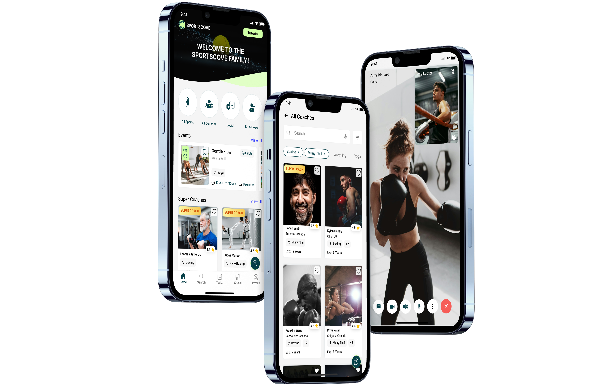
Project overview
A startup preparing to launch its first product on a tight deadline
Sportscove is a sports coaching marketplace connecting learners with coaches across the US, Canada, and India. The product was three months from launch, and needed a full product and UX audit to bring an incomplete, pre-launch platform to a scalable, launch-ready state.
Role
UX Designer
Timeline
3 months to launch
Team
2 designers, 3 developers, CEO & advisors
Deliverables
launch-ready product
Understanding where to start
Before redesigning the product, I needed to separate what worked from what didn't
The product already had screens and partially designed flows, but it was unclear whether the gaps were isolated issues or symptoms of larger problems. Before introducing new designs, I evaluated the existing experience to understand what was missing, where users were likely to encounter friction, and what needed to change before launch.
Reviewing the research already conducted
The team had already interviewed learners and coaches shortly before I joined the redesign. With the limited time, I used the existing interviews as a starting point.
The research provided useful directional insights, but here are a few of the questions I would have changed across both interviews, not the full list.
Learner research
What they askedWhat I would ask instead
✕"If you could design an app for training with certified coaches, what features would you want?"
✓"Tell me about the last time you tried to improve at your sport. What did you do?"
Why
A wishlist of features reveals what people think sounds good, not what actually helps them improve — a real attempt surfaces what they tried, what worked, and where they got stuck.
✕"Do you think learning in a group would be beneficial for you?"
✓"If you were booking a coaching session for your sport, would you want it to be one-on-one or with other learners? What would make you choose one over the other?"
Why
A yes/no question about whether group learning is “beneficial” asks users to evaluate an abstract idea. Asking them to imagine an actual booking decision makes the choice concrete and reveals why they prefer one format, whether that is individual attention, learning from others, social interaction, cost, or something else
✕"What factors would make you choose one coaching platform over another?"
✓"Tell me about the last time you were deciding between a few different coaches. What made you hesitant about any of them?"
Why
Asked as "what factors would make you choose," this is hypothetical and invites a generic list like price or reviews — asking about real hesitation surfaces the actual trust gaps a coach profile needs to close.
✕"What do you look for in a sports coach?"
✓"Think about the last time you compared a few coaches before choosing one. Walk me through how you compared them, and what ultimately tipped it."
Why
A general checklist answer isn't tied to any real decision — walking through an actual comparison surfaces the process itself, which is directly useful for designing how multiple coaches get shown side by side.
Coach research
The coach interviews were more grounded in real coaching experience, but I would have pushed further into how coaches currently acquire, manage, and retain learners.
View the coach research questions
What they askedWhat I would ask instead
✕"What are your biggest challenges with virtual coaching?"
✓"Tell me about the last virtual session that didn't go as planned. What happened?"
Why
"Biggest challenges" invites a general, abstract complaint — a specific session surfaces the real friction point and exactly how it played out.
✕"What factors would make you choose one coaching platform over another?"
✓"How do you currently find students, and what does that process look like from first contact to booking?"
Why
Most coaches hadn't used a comparable platform, so comparing them was hypothetical — mapping their actual acquisition process reveals what a platform would genuinely need to support.
✕"What would your ideal sports coaching app look like?"
✓"What tools or workarounds do you currently use to manage your coaching?"
Why
"Ideal app" invites wishlist thinking disconnected from reality — current workarounds reveal what's actually missing and what they're already solving for themselves.
✕"What tools would you like to see to bridge the gap between virtual and in-person coaching?"
✓"If you teach more than one sport, tell me how you decide what to offer a new student, and how each sport shows up when someone's looking for a coach."
Why
Multi-sport coaching wasn't asked about at all, even though it later becomes a real design problem — how a coach's sports get shown on a card. Asking it here creates a direct line from research to that decision instead of the logic appearing out of nowhere.
The research gap I would have explored
Learners
1Sport
2Skill level
3Goal
4How they find coaches
5How they compare
6What builds trust
7What happens after booking
Coaches
1Sports taught
2Learner types
3How they find students
4How they manage sessions
5Marketplace frustrations
6What would make the platform valuable
This would help answer a larger product question:
Larger product question
Can one coaching experience work across sports, or does discovery and booking need to adapt to the learner's sport, skill level, and goal?
What I would have done with more time
1
Survey
Identify patterns across sports and user types.
2
Interviews
Understand the behaviours and motivations behind those patterns.
3
Segmentation
Sport × Skill level × Goal × Coaching format
4
Product decisions
Use those findings to determine what should be universal across Sportscove and what should adapt to each type of user.
Auditing what was missing
Existing screens were audited against the product requirements to flag what was complete, incomplete, or missing.
What was found
Incomplete end-to-end flows
Missing key product states (error, empty)
Gaps in session, task, and account management
Subscription experience missing key scenarios
Limited consideration for different user types and contexts (new vs. returning, active subscriptions, past activity)
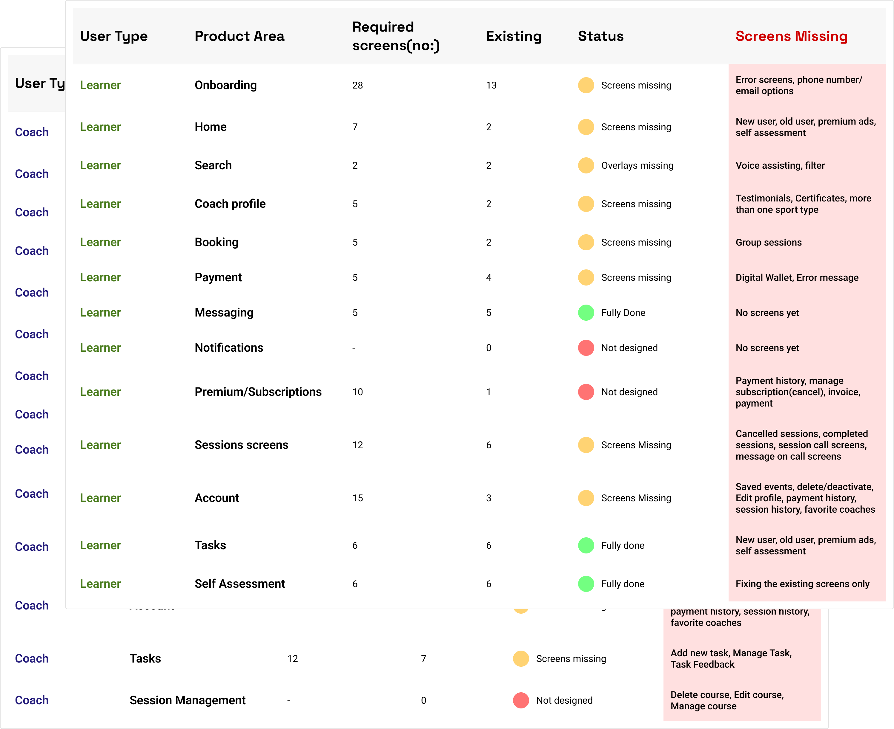
Walking through the experience as a new user
Walked every core flow as a first-time user, against standard heuristics.
Learning from the testing that had already been done
The quotes from testing done on the existing design.
Satyanshu Singh
"I don't want to do my self assessemnt now. Can I not just see the coach profile without it?"
Tanner Smith
"The coach profile has way too many things and I really don't know where to look"
Understanding how comparable products solve similar problems
Skillest and CoachUp were the closest competitors. ADPList was also reviewed for its similar mentorship model, even though it isn't sports-specific.
What was found
How intuitive and complete the overall experience felt
What built a sense of trust
How accessible the experience was for different users
How well the platform supported ongoing use, not just a single transaction
How balanced the experience was for both sides of the marketplace
Balancing user needs with what the business needed to launch
A structured conversation with the CEO ranked flows by business priority, followed by separate syncs with developers to understand what was realistically buildable inside a three-month window, before committing to a direction.
Stakeholder
"One of the biggest reasons for making this app is to encourage retired people to find a place to share their skills and earn."
Stakeholder
"The coach side was a big part of the product, since this is where coaches would sign up, verify their eligibility, build their profile, and set their prices"
Stakeholder
"We need a system to maintain the design and make sure all screens look like they're part of the same app."
Developer
"A design system could be helpful so that the button sizes, component spacings, colours and styles used can be easily executed."
Connecting the findings
What emerged was a product held back by four connected problems
A product and UX audit, benchmarking against comparable apps, and direct conversations with the CEO and developers surfaced four barriers. Every decision in this case study traces back to one of them.
01
No shared foundation
No shared components, colors, or patterns existed, so every screen was designed from scratch.
02
Core tasks didn't always have a clear path to completion
Inconsistent navigation and ambiguous interaction states meant people couldn't always tell what they'd selected.
03
Key users and scenarios were being missed
Accessible search for retired athletes and coaches, and logic for multi-sport coaches, weren't designed at all.
04
Important marketplace complexity hadn't been designed for
Gaps in the connection between learner and coach workflows, with key information missing across both sides
01 — Building the foundation
Introducing a foundation/system was the first step
A shared system for designing and building at speed.
Design System
Consistency and efficiency at scale
Built a comprehensive design system with 60+ reusable components, covering color, typography, buttons, cards, and interaction states, so every screen designed after this reused the same foundation instead of solving the same problems again.
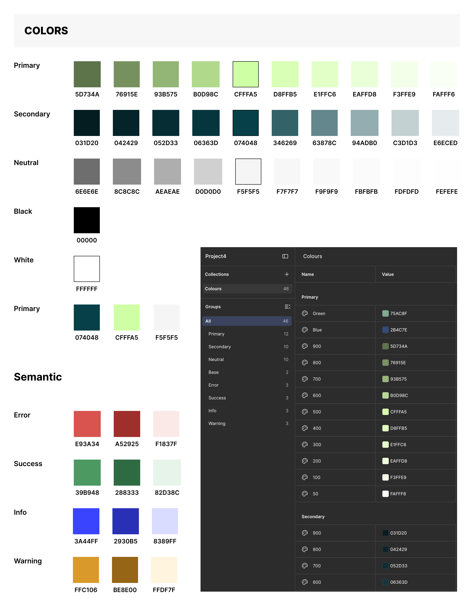
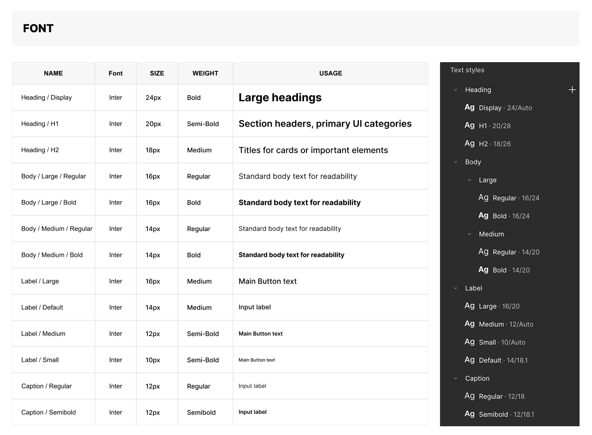
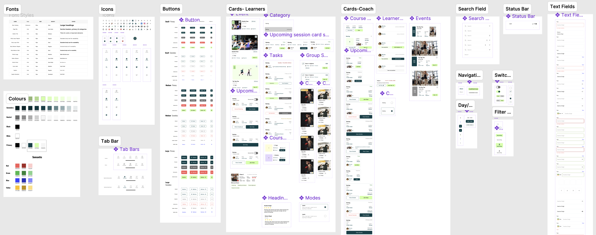
Impact:60% reduction in design time for new features
02 — Simplifying the flow
Booking a coach in a sports coaching app shouldn't be the hardest part
Booking was the platform's core transaction, but the old flow buried it behind a multi-page self-assessment before a learner could even see a coach's availability — a task that should have taken seconds took several detours instead.
Old session booking flow
User flow
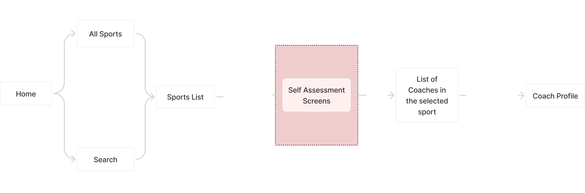
Not working
Cluttered screens
Blocked path to coach
Sports split across 2 screens
No direct coach access
No skip option
New session booking flow
User flow
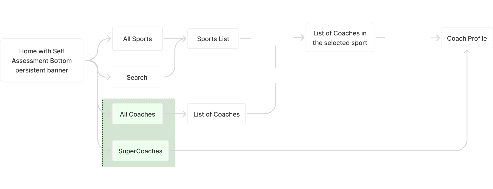
What changed
Self-assessment as banner
Multiple entry points
Visual cleanup
Sports in 1 screen
Filters added
Key screens redesigned
Home screen
From the initial survey, 76% of users were either open to exploring sports beyond their primary one, or wanted to focus on one sport while still seeing what else was out there.
This shaped the Home screen to surface coach visibility across sports through the Super Coaches and Popular Sport Coaches sections.
Old
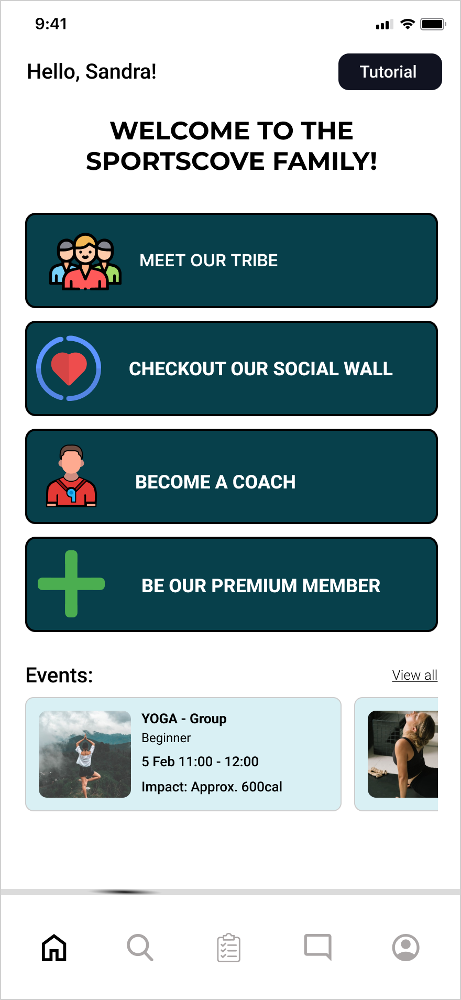
New
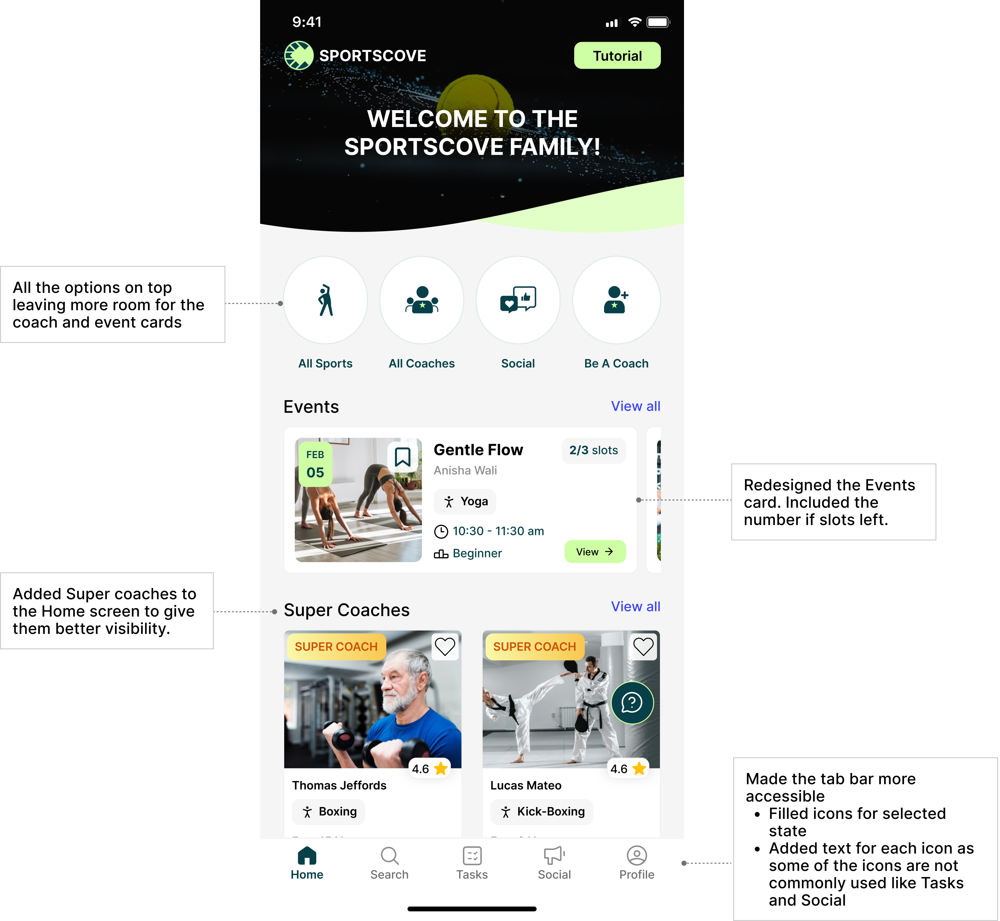
Coaches list
The initial survey showed 100% of users filtered coaches by specific criteria — rating, price, their own experience level, and location — plus a virtual or in-person preference, anticipating the company's plans for physical coaching centres across India.
The old filter existed only as a button with no screen behind it. The new coaches list built out a fully functional filter around exactly these criteria.
Old
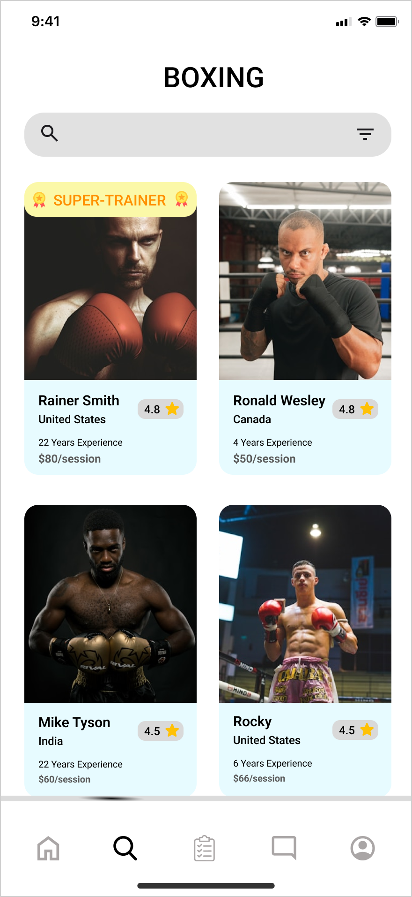
New
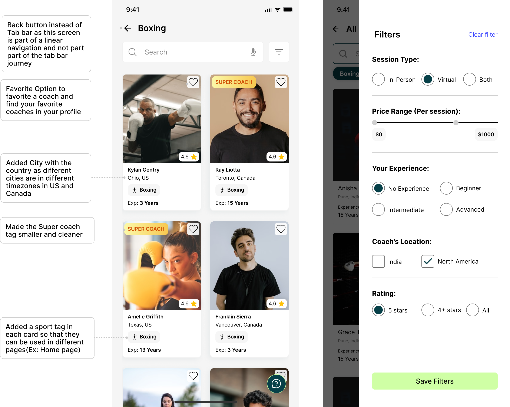
Coach profile
During testing, 90% of users found the coach profile messy and confusing — the new design was built to be cleaner and easier to scan.
2 in 5 coaches said they intended to teach more than one sport, so the profile now separates each sport and its details instead of blending them together.
Old
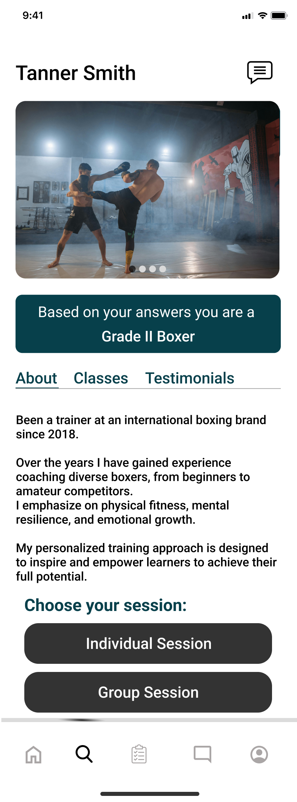
New
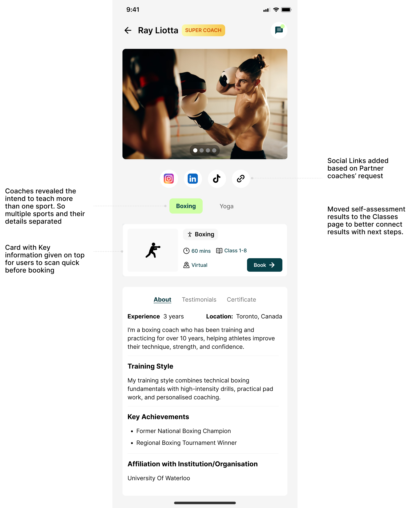
03 — Addressing overlooked users and scenarios
Designing discovery around how Sportscove's users actually search
Sportscove was also expanding into a much wider range of sports and wellness categories, not all of which could reasonably live on the same page.
Your 50-something aunt picking up golf for the first time? Not exactly a power user.
Making search easier for everyone
Guided search
The search prompt dynamically rotates through examples, "Search Boxing," "Search Tennis," "Search Yoga," showing users what they can search for instead of leaving the field blank and open-ended.
Predictive suggestions
Relevant sports appear as soon as a user starts typing. Typing "Box" surfaces Boxing, grouped under its category, without needing the full word.
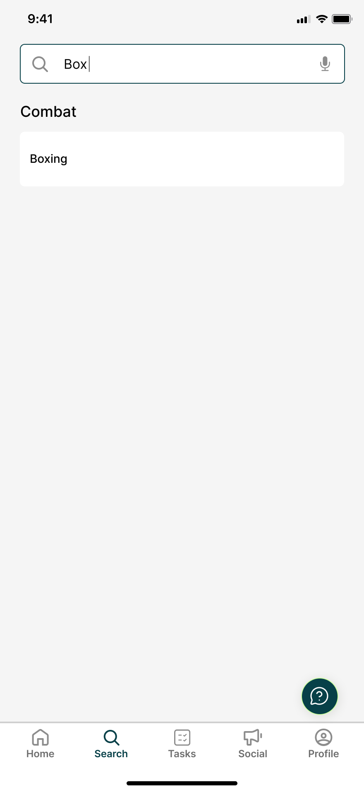
Voice search
A microphone option lets users search without typing at all, paired with example phrases and an instructional prompt so the feature is easy to discover, not just available.
Improved filters: Filters were reworked to make narrowing results easier, giving users more control over discovery once a search returned results.
Together, these changes moved search from something you had to already know how to use, to something that showed you how to use it.
Making multi-sport coaches visible without overwhelming the cards
A coach's profile shouldn't be limited to just one sport
Coaches on Sportscove aren't always specialists in a single sport. Some offer multiple disciplines, which raised a discovery problem: how could those coaches show up across every sport they taught, without turning every search card into a wall of text?
Initial Exploration
The first approach displayed every one of a coach's sports directly on the card.
Option 1
Works when both sports have short names, but doesn't hold up once a coach teaches more.
Option 1 (With a longer sport name)
A longer sport name like "Muay Thai" still fits, but only just, leaving no room to add a third.
Option 2
The tag truncated with an ellipsis is readable but the looks less polished.
Showing every sport
This made the information explicit, but became visually heavy for coaches with several sports or longer sport names, hurting scannability, especially on mobile.
A simpler card, with smarter logic
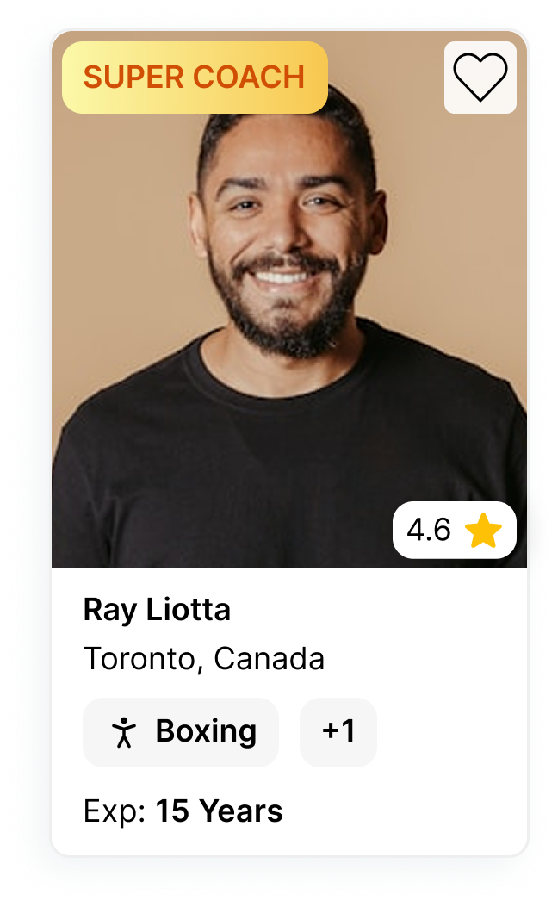
A +N indicator kept cards concise while still signalling that a coach offered additional sports beyond the one shown.
But a multi-sport coach can surface under several different searches, so simply showing their primary sport wasn't always relevant. The sport displayed needed to reflect how the user actually found the coach, not just how the coach was set up in the system.
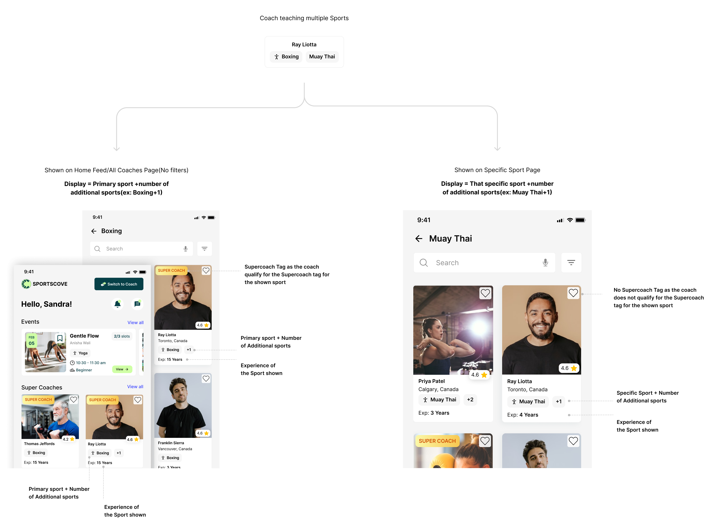
Homepage / no sport selected
Primary sport shown → years of experience for primary sport
Search: Muay Thai
Muay Thai shown first → years of experience for Muay Thai → remaining sports → +N
The card became context-aware: what it showed depended on user intent, not just coach data.
04 — Addressing marketplace complexity
Reworking coach onboarding
Coach onboarding was where the marketplace's two sides actually met — a coach's profile, verification, offering, and pricing all had to come together into something a learner could trust and book. The existing flow treated onboarding as a single linear form, with no separation between those responsibilities and no way to recover when something went wrong.
01 / Redoing the IA
I started by restructuring the existing onboarding into a clearer journey, separating profile, verification, offering and availability.
Old
New
Mixed responsibilities→Clear stages
Profile-focused→Marketplace-focused
Linear setup→Coach readiness
02 / Testing exposed the gaps
A first prototype was built from this restructured flow and tested with four coaches. Their responses made one thing clear: the design had only really accounted for the happy path. Outside of it, there was little in place — few error states, almost no prevention, and no way to recover once something went wrong.
01
"I thought I had completed it, so why can't I move forward?"
02
"I don't have my certificate right now. Can I come back to this later?"
03
"I filled everything out… and only now I'm being told I need to verify?"
04
"If the learner pays $100, how much do I actually make?"
05
"I don't want to finish this right now, but I don't want to lose everything."
03 / Designing beyond the happy path
The first flow only mapped the happy path. A closer pass over the form — and testing with real coaches — surfaced the edge cases it hadn't accounted for.
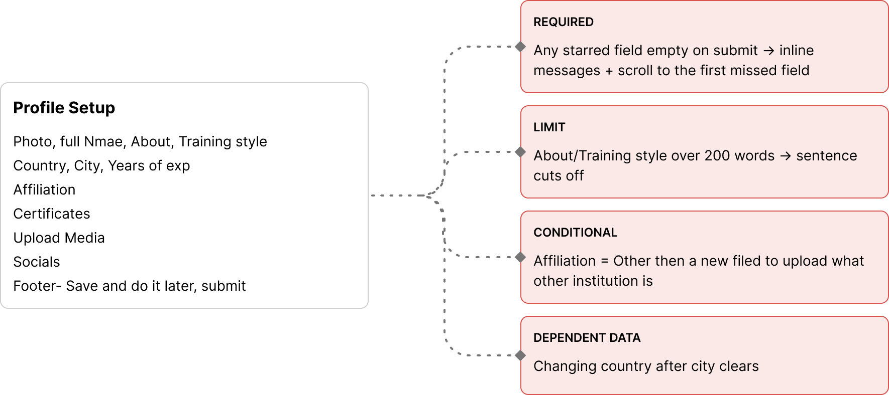
Required fields
Users could reach the end of onboarding without completing required fields, only discovering what was missing at submission.
Change
Required fields now have inline validation, with the flow automatically scrolling to the first incomplete field.
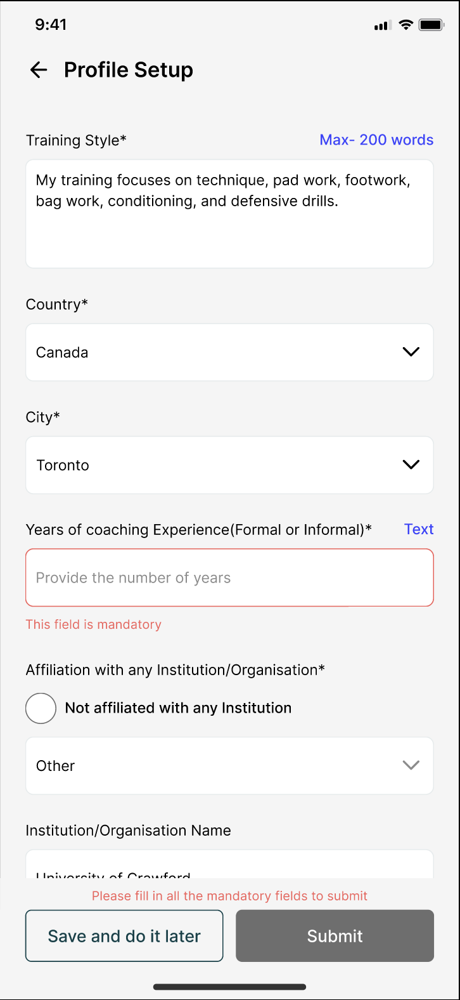
Content limits
The About and Training Style fields had a 200-word limit, but users weren't aware when they reached it.
Change
The fields stop accepting text after 200 words and provide immediate feedback — "200-word limit reached. Additional text not added."
Conditional fields
Selecting "Other" as an affiliation required additional information, but the original flow didn't account for it.
Change
The form dynamically reveals a new field when "Other" is selected.
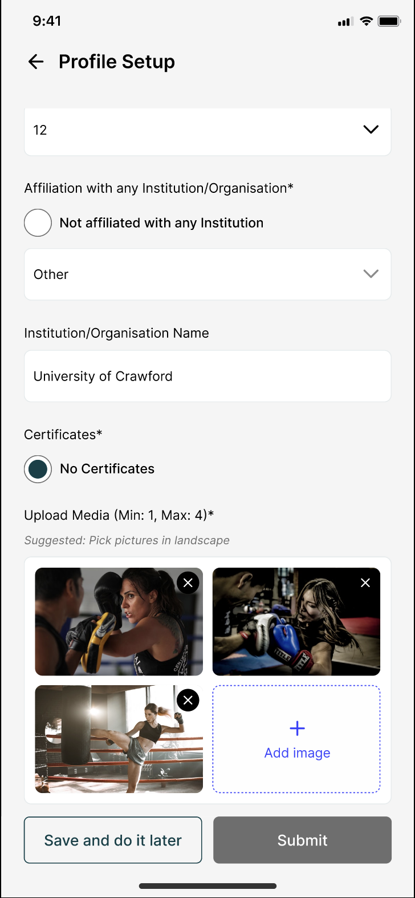
Dependent data
City was dependent on country, but changing the country could leave an outdated city selected.
Change
Changing the country now clears the existing city so the selection always stays valid.
Other screens worked on
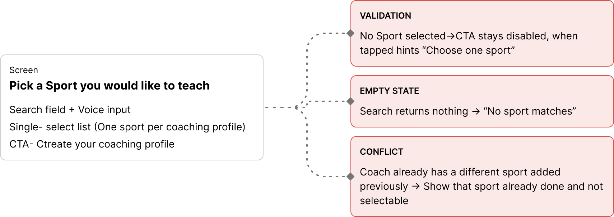
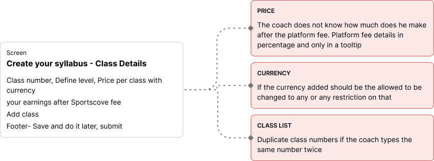
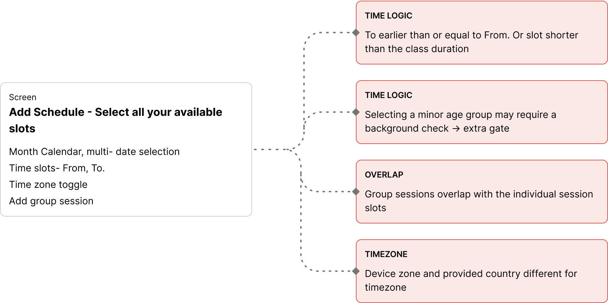
04 / From a form to a resilient flow
A flow that doesn't fall apart when the happy path ends.
The best flows aren't the ones without edge cases. They're the ones built to survive them.
Beyond the core work
Additional stuff I did because I wanted to
None of this was on the requirements list. I built it anyway, because the small, first-impression moments of an app deserve as much care as the core flows.
Splash screen & spinner loader animations
Designed and animated the app's splash screen sequence entirely inside Figma, using prototyping and smart animate rather than a separate motion tool
Built a custom spinner loader animation the same way, so loading states felt like part of the same product instead of a generic default spinner
Both were self-initiated, done purely to make the first few seconds of opening the app feel considered rather than purely functional
Splash screen animation
Spinner loader animation
Key transformations & outcome
The same four problems, closed
A reusable design system in place, cutting design time on every screen built after it.
Missing features and user groups, including retired athletes and multi-sport coaches, addressed directly.
Journeys redesigned around what learners and coaches were actually trying to do, not just individual screens.
Critical flows completed, with every missing screen and edge case identified and designed before launch.
Measured Results
96%
Task completion rate
40%
Expected increase in sign-ups
23%
Booking conversion improvement
60%
Design efficiency gained
Key Learnings
Strategic thinking over execution: the most impactful work happened in decision-making frameworks, not pixel-pushing. Understanding constraints and trade-offs shaped better outcomes.
Systems thinking pays dividends: building the design system upfront saved exponentially more time than it took to create.
Test assumptions early: usability testing caught critical issues that would have been expensive to fix post-development.


{kind=link}